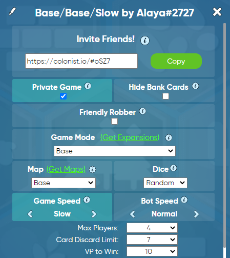

Step 1: Have one person in your group create a new game of Catan here by clicking on the grey "Create" button next to "Multiplayer Game".
Step 2: The game creator adjusts game settings to the following:
Step 3: Copy the game link and paste it into the chat. Make sure to address the message "To Everyone" so that the mods can post the game links for players and spectators.
Step 4: To join the game, do not click the link in the chat! Instead, copy the link from the chat and paste it into the box below. If the maximum # of players has been reached, you will automatically join as a spectator.
IMPORTANT! Do not click the link provided in the chat! If you do, the game will open in a new tab and you'll be unable to see your teammates' video while playing the game.